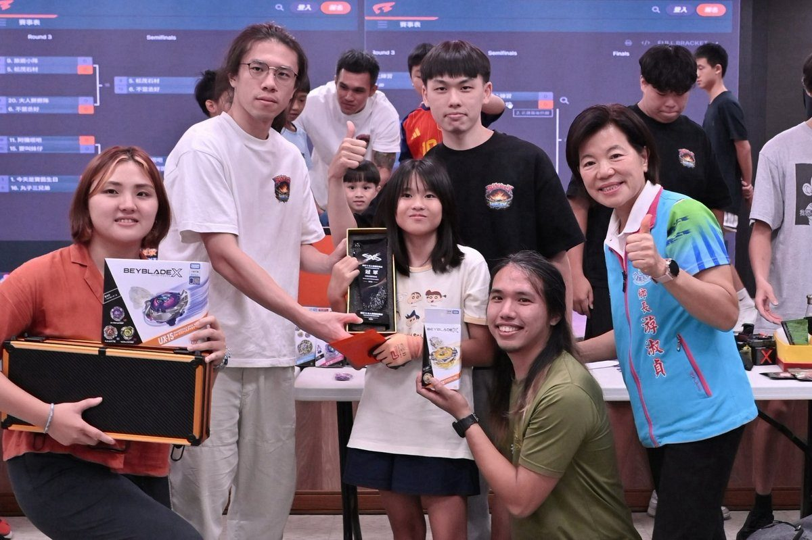

吉安陀螺名人杯熱血開戰 150選手親子同樂

可樂電子報小編/編輯
一場由民間玩家自主發起、充滿熱血與活力的「霖仔X陀螺－名人杯榮耀賽」昨日在吉安鄉公所二樓親民堂熱鬧登場。賽事打破傳統官方主導框架，由熱愛戰鬥陀螺的民間玩家共同策劃，並邀請吉安鄉公所與吉安鄉青年會攜手合辦，為在地鄉親與愛好者打造適合親子共同參與的休閒競技舞台。

本次活動最大亮點在於展現強大的民間自主動能與向心力，所有經費皆由發起玩家自發籌措，展現對推廣休閒運動的熱忱。吉安鄉長游淑貞得知後立即表達公所全力相挺，提供親民堂作為競技場地；吉安鄉青年會則發揮在地青年服務精神，全面協助跨界協調、賽程推動與動線服務，成為賽事順暢進行的堅強後盾，多家在地店家也贊助獎品與物資，讓活動更加豐富。

主辦單位與青年會表示，戰鬥陀螺是一項適合親子共玩的休閒運動，既是競賽也是促進互動的媒介，盼讓孩子遠離3C、增進人際互動與親子情感。吉安鄉長游淑貞指出，本次集結花蓮縣150位戰鬥陀螺高手，涵蓋小朋友、大朋友及年長鄉親，展現老幼共融的熱鬧景象，參賽者在場上展現君子之爭的精神。她強調未來將持續以公私協力模式推動健康親子休閒活動，期盼更多基層活動遍地開花，共同活絡地方健康休閒風氣。


▶ 延伸觀看
📺 相關報導影片：點此於 YouTube 觀看完整報導